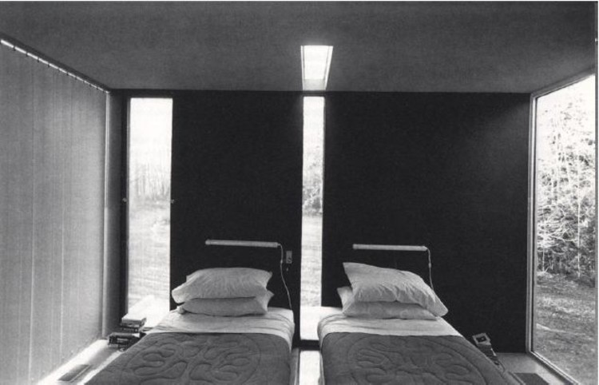

Chips and guac
Everything bagels
Raspberries
http://ligature.ch/
I love this websity because it has a wide variety of content, there are interviews with designers and artists. The overall facade of the website is simple, functional and sharp, it is legible and only in black and white! The website is influenced by Swiss typography, so the typography is set entirely in Helvetica. I like the articles on this website because they are easy to read, easily accessible and full of inspiration.

https://kquea402.github.io/
- Japan